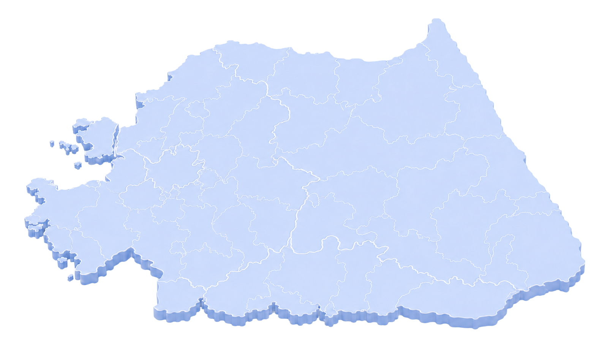

01BUSINESS · 사업소개
입지
TRANSPORT교통환경
B-CITY는 서울·수도권 1시간 생활권은 물론,
국내를 넘어 글로벌 비즈니스 허브로 도약합니다
새로운 동부권 비즈니스 허브, B-CITY

* 소요시간은 교통량 및 도로사정에 따라 차이가 발생할 수 있습니다.

INFRASTRUCTURE광역 인프라
B-CITY를 둘러싼 완성된 인프라
대한민국 바이오 산업의 중심 춘천을 기반으로, 산업·교육·의료·관광 인프라가 유기적으로 연결된 미래 혁신도시의 최적 입지를 완성합니다
01산업 인프라
대한민국 바이오 혁신 생태계의 중심
춘천바이오산업진흥원과 강원연구개발특구를 비롯한
다양한 산업 인프라를 기반으로
기업과 연구기관, 인재가 함께 성장하는 혁신 생태계를 형성합니다.
- 춘천바이오산업진흥원
- 강원연구개발특구
- 인근 산업단지 및 네트워크
02학술 인프라
미래 인재를 키우는 교육·연구 거점
강원권 대학과 연구기관이 집적된 교육 환경을 바탕으로 산업과 연구, 인재 양성이 선순환하는 혁신 생태계를 구축합니다.

강원대학교 (춘천캠퍼스) 
한림대학교
※ 사진 출처 — 공공누리 · 한림대학교
03의료 · 공공 인프라
수준 높은 의료 서비스와 안정적인 행정 인프라
대학병원 중심의 의료 인프라와 강원특별자치도·춘천시의 행정 지원 체계를 기반으로 안정적인 정주환경을 제공합니다.

강원대학교병원 
한림대춘천성심병원 
강원도청 · 춘천시청
※ 사진 출처 — 강원대학교병원 · 한림대학교춘천성심병원 · 공공누리
04관광 · 여가 인프라
사계절 자연과 문화를 누리는 라이프 환경
남이섬, 강촌, 의암호, 소양강 등 춘천을 대표하는 관광·문화 자원을 가까이 누릴 수 있는 차별화된 정주환경을 제공합니다.

남이섬 
비발디파크 
강촌 (엘리시안 강촌) 
의암호 
소양강 
레고랜드
※ 사진 출처 — 한국관광공사
산업·학술·의료·관광, 도시 전체가 하나의 인프라가 되는 곳
B-CITY는 춘천이 가진 모든 광역 인프라가 유기적으로 연결되는 최적의 입지에 자리합니다